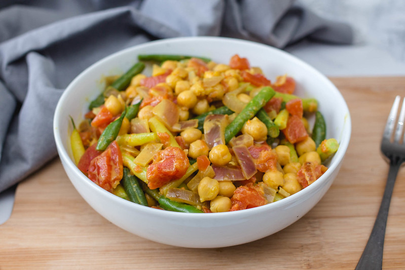

Chickpea Curry (Vegan)

"Checkpea Curry with vegetables in a Bowl" by wuestenigel is licensed under CC BY 2.0
Why This Recipe Works
For a simple, vegetarian weeknight curry, we simmer canned chickpeas with tomatoes, spices, and coconut milk.
Ingredients
- 2 tablespoons vegetable oil
- 2 red or yellow bell peppers, stemmed, seeded, and cut into 1-inch pieces
- Salt and pepper
- 1 jalapeno chile, stemmed, seeded, and minced
- 4 garlic cloves, minced
- 1 tablespoon grated fresh ginger
- 2 (15-ounce) cans chickpeas, rinsed
- 1 (14.5 ounce) can diced tomatoes
- 1 (14 ounce) can cocoanut milk
Instructions
- Heat oil in Dutch oven over medium-high heat until shimmering. Add bell peppers, 1 1/2 teaspoons salt, and 1/2 teaspoon pepper and cook until bell peppers are beginning to brown, 5 to 7 minutes. Add jalapeno, garlic, ginger, and curry powder and cook until fragrant, about 30 seconds.
- Add chickpeas, tomatoes and their juice, and coconut milk and bring to boil. Cover, reduce heat to medium-low, and simmer until bell peppers are tender and flavors have melded, about 20 minutes, stirring occasionally. Served with rice and chopped fresh cilantro.